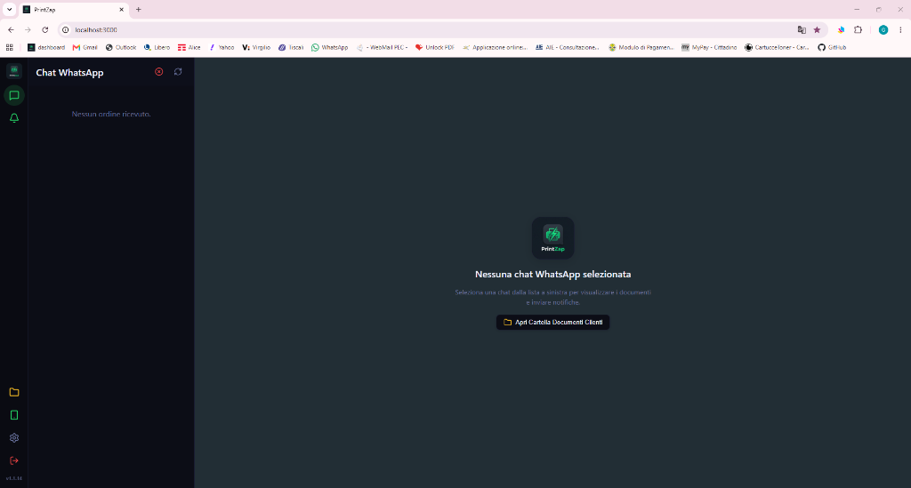
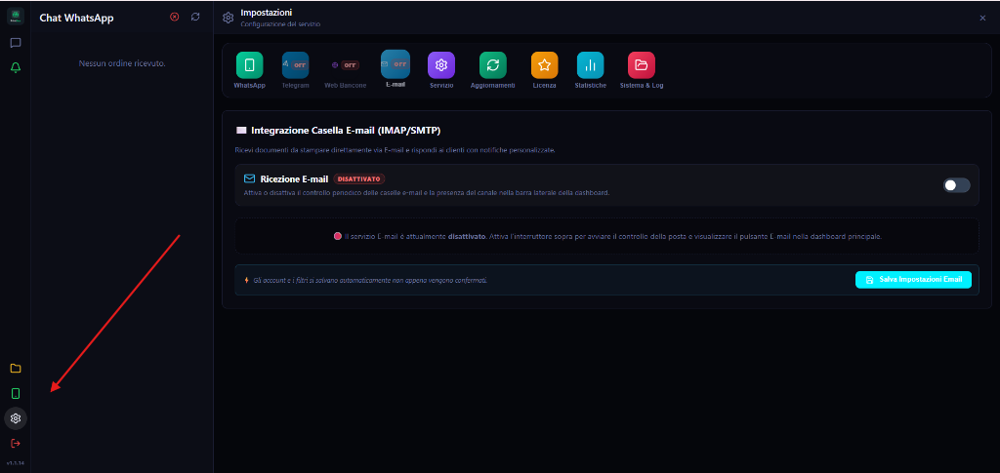
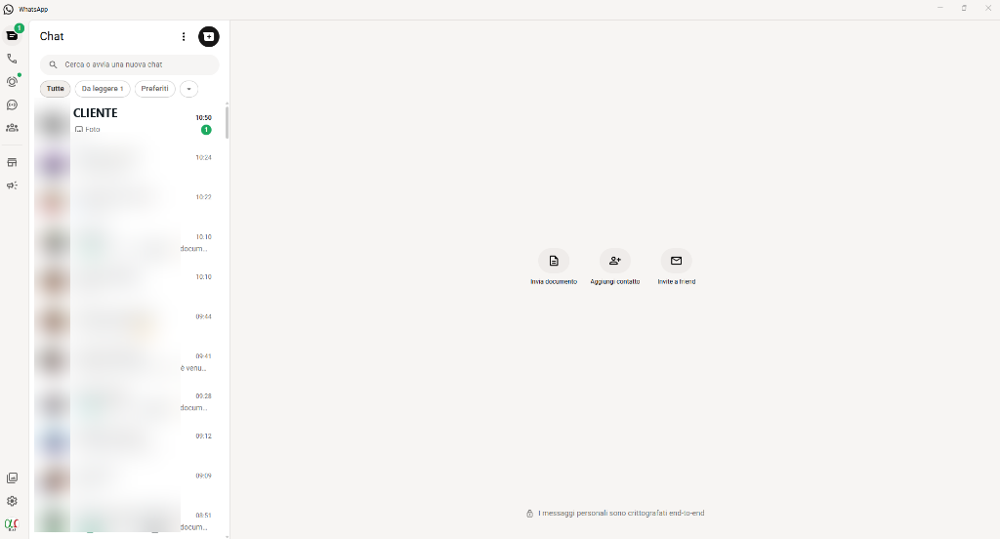
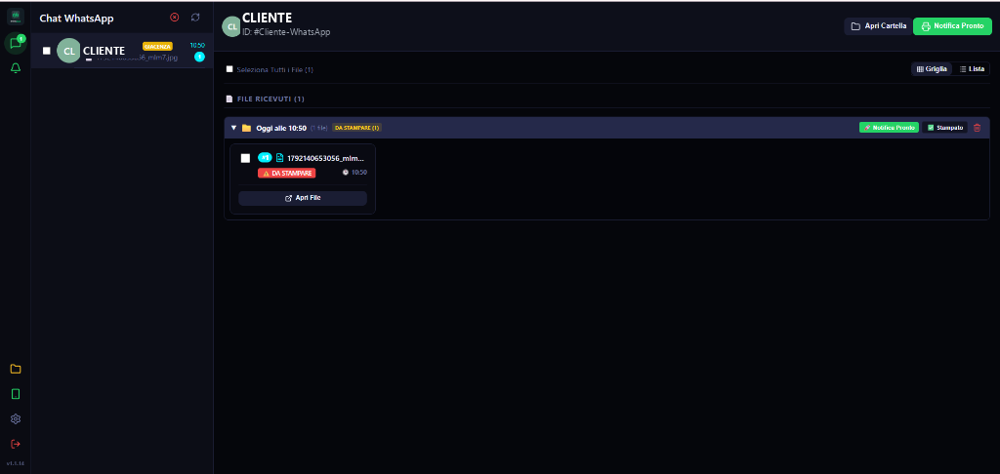
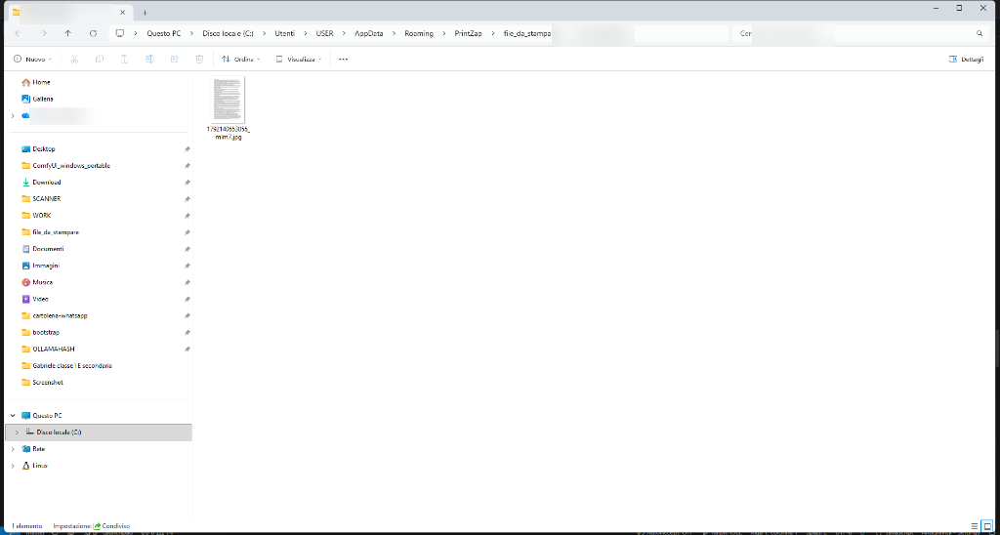
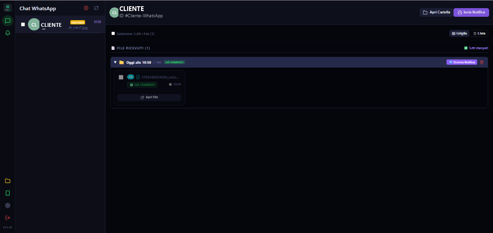
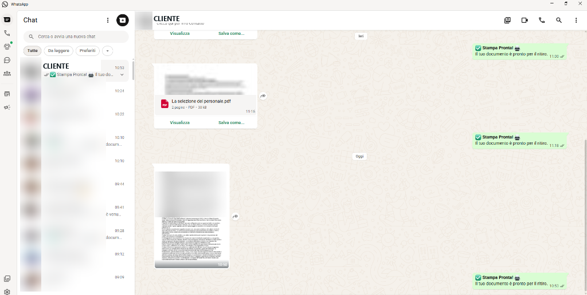
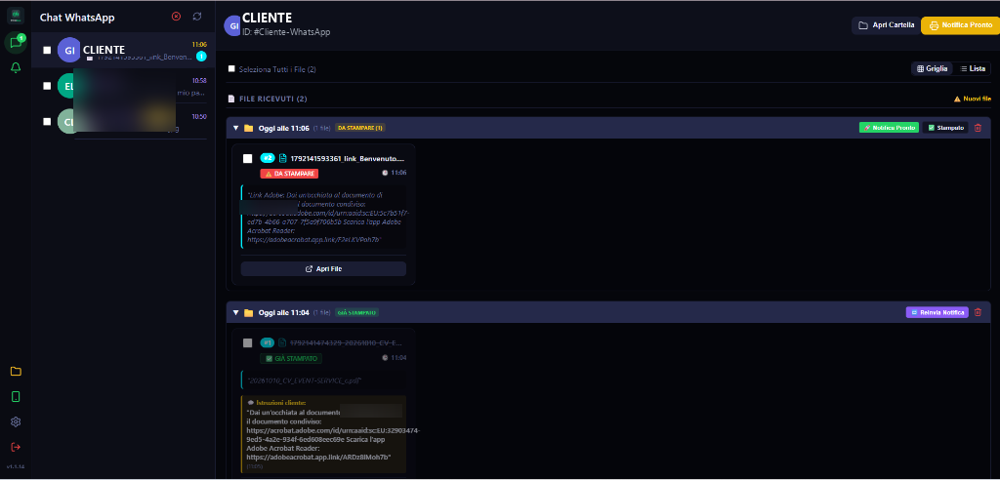

0
Primo Avvio: Connessione WhatsApp via Scansione QR Code
Associazione sicura dello smartphone in 5 secondi (senza costi API)
-
▶
Come associare il telefono: Apri WhatsApp sul tuo telefono, entra in Impostazioni > Dispositivi collegati, tocca Collega un dispositivo e inquadra il QR Code mostrato a video.
-
▶
Semaforo Barra Laterale: L'icona dello smartphone in basso a sinistra pulsa in arancione durante l'attesa del codice e diventa verde fissa a connessione completata.
-
▶
Pulsanti Aggiorna QR e Rigenera: Se il codice scade o sostituisci lo smartphone aziendale, puoi richiedere un nuovo QR Code all'istante con un semplice clic.
🔒 Nessun canone WhatsApp / Meta: PrintZap si collega direttamente al tuo account WhatsApp Web ufficiale senza bisogno di costosi account sviluppatore o abbonamenti terzi.
1
Dashboard Principale & Indirizzo Locale (Porta 3000)
Schermata di avvio operativo e personalizzazione porta
-
▶
Indirizzo Web Locale (
localhost:3000): PrintZap si apre direttamente nel tuo browser predefinito (Google Chrome) a questo indirizzo locale. Non richiede connessioni a server remoti e risponde istantaneamente a zero lag. -
▶
Porta TCP Personalizzabile (3000 o da Impostazioni): Se il computer del tuo negozio utilizza già altri software o gestionali che occupano la porta
3000, PrintZap scala in automatico con l'auto-fallback. Inoltre, puoi visualizzare e modificare la porta in qualsiasi momento direttamente dalla Dashboard nel pannello Impostazioni ⚙️ → Servizio & Grafica. -
▶
Barra Laterale di Controllo: Sulla sinistra trovi i canali attivi (WhatsApp, E-mail, Telegram, Bancone Wi-Fi) e le scorciatoie rapide per accedere alla cartella generale documenti, alle impostazioni e allo stato connessione.
💡 Zero Conflitti: PrintZap include un meccanismo di auto-rilevamento porte. Se la porta 3000 è occupata all'avvio, il sistema scala in automatico per garantirti continuità di servizio.
2
Pannello Impostazioni & Configurazione del Servizio
Tutte le schede operative a portata di clic
-
▶
Accesso Rapido (Icona Ingranaggio): Come evidenziato dalla freccia rossa, cliccando sull'icona a ingranaggio in basso a sinistra si apre il centro di controllo completo di PrintZap.
-
▶
Panoramica Schede: Puoi configurare singolarmente: WhatsApp (connessione QR Code e lookback 96h), Telegram, Web Bancone, E-mail (ricezione IMAP/SMTP), Servizio (stampanti predefinite e cartelle su disco), Aggiornamenti, Licenza, Statistiche e Sistema & Log.
-
▶
Attivazione Flessibile: Ogni canale secondario (come l'E-mail mostrata nella foto) dispone di un interruttore ON/OFF: attivi solo i canali che usi realmente in negozio.
3
Flusso di Lavoro: Arrivo del File su WhatsApp Desktop
Usi WhatsApp come hai sempre fatto, senza cambiare abitudini
-
▶
Ricezione Naturale da WhatsApp: Il cliente (alle 10:50) invia un'immagine o un documento tramite WhatsApp. Sul tuo computer il badge verde mostra
1messaggio non letto. -
▶
Zero Operazioni Manuali: Non devi aprire la chat, non devi fare clic col tasto destro e non devi premere "Salva con nome". PrintZap rileva il file all'istante e lo cataloga automaticamente.
4
Ordine Ricevuto & Etichetta GIACENZA a Video
Comprensione immediata dello stato cliente e delle stampe arretrate
-
▶
Comprensione Immediata del Cliente: Il cliente compare in cima alla colonna di sinistra. Cliccandoci sopra, vedi la sua scheda con il numero oscurato per privacy (GDPR al bancone).
-
▶
Perché compare il Badge Giallo "GIACENZA": Come si nota nello screenshot, accanto a CLIENTE c'è il badge giallo GIACENZA. Questo accade perché il cliente aveva già file o ordini arrivati ieri o nei giorni passati e non ancora ritirati! L'avviso visivo ti permette di accorgerti subito che il cliente ha documenti arretrati.
-
▶
Raggruppamento per Sessioni Temporali: I file ricevuti sono organizzati in comode cartelle di sessione ("Oggi alle 10:50 (1 file)") con badge arancione "DA STAMPARE (1)".
⚠️ Attenzione al Badge GIACENZA: Quando vedi l'etichetta gialla GIACENZA, sai che oltre ai file freschi di oggi ci sono documenti precedenti in attesa di essere consegnati. Mai più stampe dimenticate sul banco!
5
Apertura Istantanea della Cartella sul PC (Tasto "Apri Cartella")
Tutti i file catalogati con il nome reale del cliente
-
▶
Un Solo Clic su "Apri Cartella": Premendo il pulsante "📂 Apri Cartella" in alto a destra su PrintZap, Windows Explorer si apre istantaneamente in primo piano esattamente nella cartella creata per quel cliente:
...\PrintZap\file_da_stampare\Cartella_Cliente\ -
▶
File già Estratto e Pronto: Il file
1792140653056_mlm7.jpgè già salvato e pronto per essere aperto con Photoshop, Acrobat Reader o trascinato nel software della stampante/plotter.
6
Invio Notifica "Stampa Pronta" & Cambio Colore a Video (Viola)
Il semaforo visivo che avvisa che il lavoro è concluso
-
▶
Un Clic su "Notifica Pronto": Appena hai stampato il documento, clicchi su "🖨️ Notifica Pronto" (o premi il pulsante 🚀 nella cartella di sessione).
-
▶
La Trasformazione Cromatica in VIOLA: Il pulsante si trasforma all'istante in VIOLA (
Invia Notifica/🔁 Reinvia Notifica), il nome del cliente si colora di lilla e il badge del file diventa verde: "✅ GIÀ STAMPATO". -
▶
Controllo al Bancone: Quando il cliente entra in negozio, guardi lo schermo e il colore viola ti dice all'istante: "Il lavoro del CLIENTE è concluso al 100% ed è stato già avvisato!".
🟣 Feedback Visivo Totale: Non serve ricordarsi se hai già avvisato il cliente: il colore viola della riga lo certifica a colpo d'occhio.
7
Conferma Ricezione su WhatsApp & Salvaguardia Cronologia
Messaggio ufficiale recapitato senza perdere un singolo messaggio precedente
-
▶
Messaggio Consegnato su WhatsApp (Ore 10:53): Sull'app WhatsApp del cliente arriva puntuale il messaggio ufficiale con doppia spunta: "✅ Stampa Pronta! 🖨️ Il tuo documento è pronto per il ritiro."
-
▶
La Prova della Cronologia Intatta: Guardando la schermata, si vede chiaramente che tutta la conversazione precedente di ieri (con il PDF "La selezione del personale.pdf" e la precedente notifica) è rimasta perfettamente memorizzata e intatta. Questo spiega anche perché su PrintZap compariva l'etichetta GIACENZA per il CLIENTE!
-
▶
Preservazione del Badge Non Letti: L'invio della notifica da PrintZap non marca come letti i messaggi che volevi consultare con calma dal telefono. La tua normale operatività quotidiana rimane inalterata.
8
Download Automatico Link Cloud (Adobe, Drive...) & File Aggiunti (Giallo)
Niente più link aperti a mano nel browser e gestione visiva degli aggiornamenti
-
▶
Download Automatico da Link Cloud: Quando il cliente invia un link di condivisione invece di allegare il file, PrintZap estrae e scarica automaticamente il documento sul tuo computer in locale. Supporta nativamente: Adobe Acrobat (
acrobat.adobe.com), Google Drive, Google Quick Share, Dropbox, OneDrive, Pinterest e qualsiasi link diretto o con meta-tag Open Graph! -
▶
Flusso File Aggiunti & Stato Giallo Oro: Nello screenshot si vede chiaramente il caso reale di un CLIENTE: alle 11:04 aveva inviato un primo file (già stampato, con pulsante viola
Reinvia Notifica), ma alle 11:06 ne ha inviato un secondo (DA STAMPARE). -
▶
Pulsante Giallo e Avviso "Nuovi File": PrintZap rileva la sessione precedente completata e accende la schermata in GIALLO ORO: il nome diventa giallo, compare l'etichetta
⚠️ Nuovi filee il pulsante in alto a destra diventa GIALLO[ 🖨️ Notifica Pronto ]. In questo modo sai che devi stampare il nuovo file e puoi rinotificare il cliente per il secondo lavoro senza confusione!
⚡ Zero Tempo Perso con i Link: Il cliente ti manda il link di Adobe Acrobat o Google Drive? Non devi copiare l'URL, incollarlo su Chrome e cliccare "Scarica": PrintZap fa tutto da solo e te lo fa trovare già scaricato e ordinato!
Pronto a semplificare il banco della tua cartoleria?
Installa PrintZap e prova gratis tutte queste funzionalità nel tuo negozio per 30 giorni.